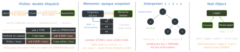

design · folio
In one line: Visitor — add operations over a stable set of element types
without editing them, via double dispatch. Memento — capture an object’s state
in an opaque snapshot so it can be restored (undo) without breaking encapsulation.
Interpreter — one class per grammar rule; evaluate the AST. Null Object —
a do-nothing implementation instead of nil checks. In Swift the first three usually
become enum + exhaustive switch, value snapshots, and an indirect enum.
Download PDF Print view LaTeX source


Visitor (behavioural) GoF: “represent an operation to be performed on the elements of an object structure; lets you define a new operation without changing the classes of the elements”. Roles: Visitor (one visit per ConcreteElement) · ConcreteVisitor · Element (accept(v)) · ConcreteElement · ObjectStructure.
Double dispatch: the code run depends on two runtime types; Swift/Java dispatch on the receiver only, so Visitor chains two calls: accept dispatches on the element, visit(self) on the visitor (overload picked statically).
Costs: adding an element type breaks every visitor (the expression problem, Wadler’s name); elements must expose enough state for visitors (weaker encapsulation).
Swift: enum + associated values + a function with an exhaustive switch = a visitor with no boilerplate; a new case makes the compiler list every switch to fix — unless default: swallowed it.
Protocol visitor still pays for a big node hierarchy with default traversal, where each visitor overrides only a few nodes and keeps state across the walk: SwiftSyntax SyntaxVisitor (visit(_:) -> SyntaxVisitorContinueKind), SyntaxRewriter.
Memento (behavioural) GoF: “without violating encapsulation, capture and externalize an object’s internal state so that the object can be restored to this state later”. Roles: Originator (makes + restores) · Memento (wide interface to the originator, narrow to everyone else) · Caretaker (keeps them, never inspects).
Swift: state as a struct: the snapshot is a copy (CoW: cheap until a write); fileprivate fields keep it opaque; Codable persists it. iOS: state restoration (NSUserActivity, @SceneStorage).
vs Command undo: Memento stores state (always correct, memory-heavy → cap the depth, store diffs); Command stores the operation + its inverse (small, but the inverse must be exact). GoF combines them: a command keeps a memento of the before-state — as a registerUndo(withTarget:handler:) closure capturing the old value does.
Traps
- Double dispatch is both hops; element types must be closed + stable.
default:kills the exhaustiveness that replaced Visitor.- Public getters/setters are not a Memento — it is opaque.
- Memento undo = state; Command undo = operation + inverse.
- Interpreter does not include the parser.
Interpreter (behavioural) GoF: “given a language, define a representation for its grammar along with an interpreter that uses the representation to interpret sentences”. Roles: AbstractExpression (interpret(context)) · TerminalExpression (literals, variables) · NonterminalExpression (one class per rule, recurses) · Context · Client (builds the AST — parsing is outside the pattern).
Fits a small grammar where speed is not critical (GoF’s own condition). Larger or hot: a real parser + compile to closures/bytecode. Swift: an indirect enum AST + a recursive eval.
iOS you consume: NSPredicate (format string → predicate tree, evaluate(with:)), NSExpression, #Predicate (a typed expression tree), Regex. Result builders are a compile-time DSL — related, not Interpreter.
Null Object (Woolf, 1998 — not GoF) A do-nothing implementation of the protocol so clients call it unconditionally: NoopLogger, EmptyAnalytics, SwiftUI EmptyView, Combine Empty. Swift: Optionals already force the absence check at compile time; prefer ?. when absence means something, Null Object when “absent = do nothing”. Danger: it hides a missing dependency.
// Visitor as enum + switch; Interpreter as indirect enum
indirect enum Expr { case num(Double), variable(String)
case add(Expr, Expr), mul(Expr, Expr) }
func eval(_ e: Expr, _ env: [String: Double]) -> Double {
switch e { // no default: exhaustive
case .num(let v): v
case .variable(let n): env[n] ?? 0
case .add(let a, let b): eval(a, env) + eval(b, env)
case .mul(let a, let b): eval(a, env) * eval(b, env) } }
// Memento: value snapshots on two stacks
struct History<S> { private var undo: [S] = [], redo: [S] = []
mutating func save(_ s: S) { undo.append(s); redo.removeAll() }
mutating func undoLast(_ cur: S) -> S? {
guard let s = undo.popLast() else { return nil }
redo.append(cur); return s } }Remember Visitor: types fixed, ops grow, two hops · Memento: snapshot you can’t read · Interpreter: a class per rule · Null Object: nil that answers.